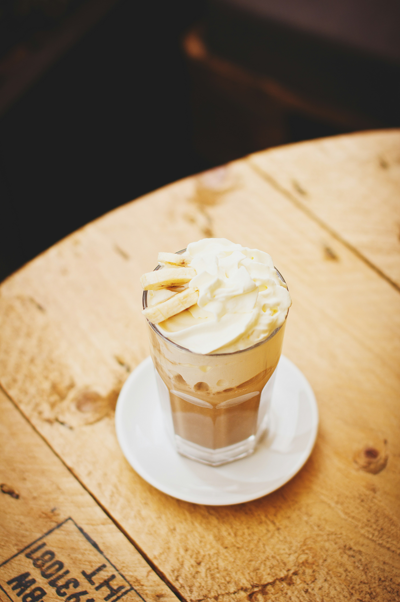

Home
Hazelnut Frappe

Description
A hazelnut frappe is a blended iced coffee drink that combines the flavors of coffee and hazelnut,
often with a creamy texture.
Ingredients
- 1 scoop (30g) MONIN Chocolate
- Frappé powder
- 30ml MONIN Hazelnut syrup
- 120ml milk
- scoop of ice
Steps
- Add all ingredients to a blending jug and mix until fully combined.
- Pour into a milkshake glass, top with whipped cream and MONIN Dark Chocolate sauce